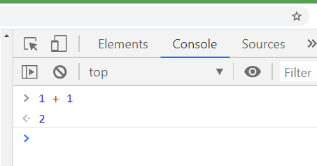
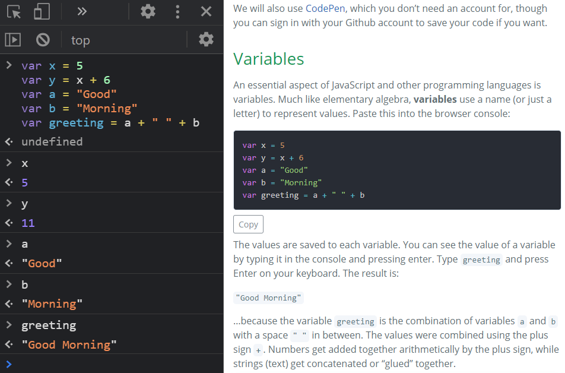

JavaScript and Leaflet
Table of Contents
Terms: JavaScript, library, variable, object, array, functions and methods, parameter
Introduction
JavaScript is a programming language that allows us to give instructions for how the browser should react to certain events, such as when the user clicks something or when the web page finishes loading. If a user clicks a polygon on a web map, for example, JavaScript can show a popup with information about the feature.
JavaScript (not to be confused with Java, another programming language) lets us program logic into our web pages, making them smarter and turning them from simple documents into complex applications.
As far as its relevance to Web GIS, JavaScript can retrieve data from web services, draw web map layers, and allow interaction with maps (zooming, popups, toggling layers, etc.). Major providers like OpenLayers, Google Maps, ArcGIS Online, Bing Maps, and Mapbox offer JavaScript libraries to use their services.
Libraries
A library is a collection of pre-written functions for common programming tasks. Libraries save developers from having to “re-invent the wheel” and develop those functions from scratch. To develop a web map, for example, you don’t have to write your own code from a blank slate to do everyday map-related tasks like arranging tiles from a tile layer, interpreting GeoJSON, and plotting latitude/longitude points on a coordinate system. Instead, you can employ one of the many JavaScript libraries made specifically for web maps.
Using the Leaflet library, the JavaScript code to show a basemap can be as simple as:
var map = L.map('map').setView([38, -95], 4);
L.tileLayer('https://{s}.tile.openstreetmap.org/{z}/{x}/{y}.png').addTo(map);
Achieving that seemingly simple task without a library, using pure JavaScript, would involve hundreds or even thousands of lines of code to deal with the complexities of geometry, projections, web services, and drawing graphics on screen. Instead, fortunately, other people have created convenient libraries with all of that worked out.
Still, creating a web map from a JavaScript library might not be as convenient as ArcGIS Online, which we used in previous assignments without writing any code at all. However, a free, open-source library like Leaflet can be useful for simple web maps that don’t need the full feature set of ArcGIS Online, as well as complex web applications that require extensive customization. Leaflet also offers freedom from becoming dependent on commercial services like ArcGIS, Google Maps, and Mapbox.
JavaScript Console
This lesson covers some programming basics that apply to JavaScript and web maps. You can type JavaScript code into your browser to try it out—in Google Chrome, press F12 to show the developer tools and then click the Console tab. You can type JavaScript directly into the console and keep it open while you read this lesson.
We will use the console to explore the concepts of:
- Variables
- Functions
- Objects and arrays
- Conditional statements
 Figure 1. Most browsers have developer tools with features like the JavaScript console, which is useful for debugging your code or just messing around with JavaScript.
Variables
An essential aspect of JavaScript and other programming languages is variables. Much like elementary algebra, variables use a name (or just a letter) to represent values. Paste this into the browser console:
var x = 5
var y = x + 6
var a = "Good"
var b = "Morning"
var greeting = a + " " + b
The values are saved to each variable. You can see the value of a variable by typing it in the console and pressing enter. Type greeting and press Enter on your keyboard. The result is:
"Good Morning"
…because the variable greeting is the combination of variables a and b with a space " " in between. The values were combined using the plus sign +. Numbers get added together arithmetically by the plus sign, while strings (text) get concatenated or “glued” together.
 Figure 2. A screenshot of the console results open side-by-side with this lesson in Google Chrome. In JavaScript, variables can hold a variety of types of values:
- string - Text
- number - An integer or decimal
- array - A collection of values
- object - A collection of property names and values
- Boolean - Can either be
trueorfalse - null - No value
- function - Code that performs a specific action, useful for organizing code and avoiding duplicated code.
var a = 'This is a string.'
var b = 5
var c = [ 'apples', 'oranges', 'grapes' ]
var d = { myFavColor: 'green', myFavNumber: 8 }
var e = true
var f = null
var g = function (){ alert('Hello!') }
To relate some of those variable types to web maps, here are variables used in the Google Earth Engine or Leaflet exercises.
This a string, or plain text, saving a web service URL to a variable.
var radarUrl = 'https://mesonet.agron.iastate.edu/cgi-bin/wms/nexrad/n0r.cgi';
This is an integer, used as the maximum elevation to display on an elevation map in Earth Engine.
var maxElevation = 20;
This is an array containing strings. The strings are colors used as the gradient of the elevation map in Earth Engine.
var demColor = ['green', 'yellow', 'orange'];
This is also an array, this time containing latitude and longitude in decimal degrees for setting the center of a Leaflet map.
var centerLatLong = [38.11, -95.02];
This is an object containing properties that will be used to display a layer on a Leaflet map. The value for transparent is a Boolean, true, meaning the layer’s white space should be transparent. The other values are strings.
var radarDisplayOptions = {
layers: 'nexrad-n0r-900913',
format: 'image/png',
transparent: true
};
This is a call to a function in Earth Engine to calculate the NDVI of a Landsat image using bands 5 and 4. The output image is saved as an object to the ndvi variable.
var ndvi = image.normalizedDifference(['B5', 'B4']);
Functions
Functions, which can also be called methods in certain cases, are another essential part of programming. Functions tell the application to take action; if variables are the nouns of the JavaScript language, then functions are the verbs. Functions also help keep code organized and prevent you from having to repeat code. JavaScript has built-in functions, and you can also define your own functions.
This example shows two built-in functions, prompt() and alert().
var userResponse = prompt("What is your name?");
alert("Hello, " + userResponse + ".");
The function prompt() is a built-in JavaScript function that tells the browser to show a window with a text box to accept typed input from the user, while alert() is another built-in function that tells the browser to display a popup window with text in it. The first line saves the user’s input to a variable, and the second line displays that input in an alert message.
You can see that the prompt() and alert() functions allow values to be added between the parentheses, and then the function uses those values within the function. They both take the values and display them in a popup window in the browser. The values that we pass to functions are called parameters.
- For
prompt(), the parameter is the string “What is your name?” - For
alert(), the parameter is the string “Hello, “ combined with the value of the variableuserResponse.
We can also create our own functions. The example below will multiply two numbers together and popup the answer. Paste this into your browser console:
var multiplyTwoNumbers = function(number1, number2){
var product = number1 * number2;
alert(product);
}
Nothing happens at first. You must “call” the function to execute its code by entering the function name followed by opening and closing parentheses, with the parameters inside if it has any. Our multiplyTwoNumbers function takes two parameters. You can use any two numbers. Try entering this in the console: multiplyTwoNumbers(3, 5). You should get a popup printing 15. Now paste this code, which passes variables x and y to the function instead of numbers directly.
var x = 4;
var y = 5;
multiplyTwoNumbers(x, y);
As a real example from Leaflet, there is the setView function, which can center and zoom a map. It takes two parameters, an array and a number. The array is lat/lon coordinates and the number is the zoom level. It is used on the first line in the code sandbox below.
In the code editor above, add a new call to the setView function to change the map’s center and zoom. Add the call on the last line, under // Add more code under here.
map.setView([30, -90], 8);
The preview map should zoom to New Orleans. What if we used variables instead of entering the array and number values directly as parameters? The function still works.
var batonRouge = [30.455, -91.187];
var zoom = 12;
map.setView(batonRouge, zoom);
Objects can also be passed to a function as a parameter. Let’s use Leaflet’s wms function to add a WMS layer to the map from a web service. Pass two parameters to the function, a string and an object. The string will be the URL to the web service, the object will be the same properties given as an example of an object earlier. Paste this into the sandbox:
map.setView([30, -90], 4);
var radarUrl = 'https://mesonet.agron.iastate.edu/cgi-bin/wms/nexrad/n0r.cgi';
var radarDisplayOptions = {
layers: 'nexrad-n0r-900913',
format: 'image/png',
transparent: true
};
L.tileLayer.wms(radarUrl, radarDisplayOptions).addTo(map);
Here is what that would look if we didn’t use variables and entered the URL and the object directly between the parentheses. If you read documentation on JavaScript libraries, you will find many examples that do it this way as a shortcut, so learn to recognize this syntax. Remove the previous lines from the sandbox and paste this:
map.setView([38, -95], 3);
L.tileLayer.wms('https://mesonet.agron.iastate.edu/cgi-bin/wms/nexrad/n0r.cgi', {
layers: 'nexrad-n0r-900913',
format: 'image/png',
transparent: true
}).addTo(map);
Examples like that might look like jumbled code, but if you think about the basics of variables, functions, and parameters, you can make sense of it when reading documentation on your own.
Summary
JavaScript lets us use some of the power of the browser to react to user input and modify webpage content, and even pull data from web services to display on a map. Unlike HTML and CSS, JavaScript allows for logic to be programmed into webpages, turning them into powerful applications.
JavaScript is a world that is easy to get lost in, especially as a map maker who just wants to show a map on a webpage. You can start out modifying example code to fit your own projects, learning more and more as you go.
Other Learning Resources
Leaflet
- GEOG 4046 Gists on Github - code snippets to do various things with Leaflet
- Leaflet example tutorials
- Leaflet reference (advanced)
JavaScript
- Codecademy - Introduction to JavaScript: Introduction
- This is a long lesson but doing only the first few parts could still be helpful.
- Mozilla - JavaScript Basics
Back to Lessons